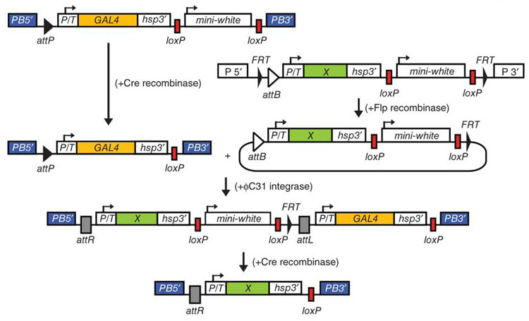

InSITE Lines can be ordered from the Bloomington InSITE page.
Database Features
About Page: Details of InSITE Method including Mapping Information, Immunohistochemistry and Imaging Adult Brain Database: Collection of 1,186 Images Adult VNC Database: Collection of 665 Images Larval Database: Collection of 719 Images Stock Information: Dynamic Table of InSITE Lines Keyword Search: Query Search Option for Morphological Features of Interest Contact: Telephone and E-mail Information Available
Recent Updates
InSITE System

Database Information
Please contact us for details on genomic mapping, swap lines, immunohistochemistry and imaging.
Schematic illustration of the procedure for genetically swapping GAL4 with sequence X .